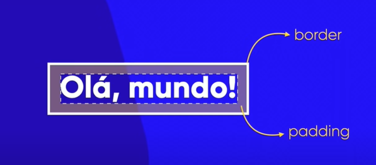
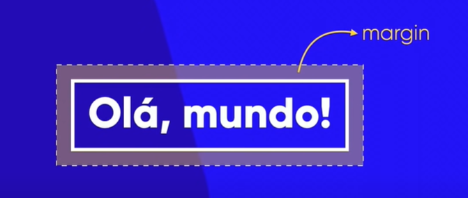

Os conceitos do Modelo de Caixas ( Box Model ) são aplicáveis ao HTML e ao CSS. Se trata de conjuntos que irão facilitar muito na hora de organizarmos o design e as partes do nosso site.
Quando temos um documento HTML, tudo aquilo que é exibido na tela, é exibido em forma de caixa... De tal modo que a grande maioria das caixas na HTML podem estar uma dentro da outra. Dessa forma, podemos formar hierarquias de caixas.
Quando colocamos um elemento dentro do outro, o termo que descreve isso é o " ANINHAMENTO ", algo em forma de ninho, coisas que estão uma dentro da outra e assim por diante. Na prática, uma caixa seria todo elemento de um site visível na tela.
Considerando que todos os elementos de um site estão dentro de uma caixa, quando formatamos um elemento com o CSS através de seletores, na verdade estamos configurando a caixa que vai estar exibindo esse elemento.
PARTE DE CONTEÚDO : Toda caixa possui um tamanho, que é chamado de " PARTE DE CONTEÚDO ", esse tamanho é especificado em duas medidas muito importantes, que são: Altura ( " height " ) e Largura ( " width " )
BORDA : Podemos traçar uma linha em volta da Parte de Conteúdo (que define o tamanho da caixa) e chamamos essa linha de " BORDA "... Sendo assim uma borda é uma linha que circunda o seu conteúdo.
PADDING : Por padrão, a linha da Borda irá ficar muito próxima da Parte de Conteúdo , e se quisermos dar um distanciamento, devemos adicionar um espaço de " PADDING " (acolchoamento), que seria uma pequena lacuna entre a Parte de Conteúdo e a Borda , para dar aquela engordada no elemento, mantendo a nossa borda distante do conteúdo.
MARGIN : Ao desenvolver um site, eventualmente iremos ter caixas uma embaixo da outra de forma seguida e, se uma dessas caixas estiver configurada com um espaçamento "padding", pode ser que elas fiquem muito próximas uma da outra e acabem "grudando" na borda do elemento de cima. Pensando nisso, podemos criar, além de um espaço interno (padding), um espaçamento EXTERNO logo após a borda , que seria um " MARGIN ".
OUTLINE/TRACEJADO : Outra coisa que podemos fazer dentro do margin (espaçamento externo), logo do lado de fora da borda, é criar um tracejado, que não seria uma segunda borda e sim uma área chamada de " OUTLINE " (contorno/traçado).
box-level / block-level: Em uma caixa do tipo "box-level / block-level", o dito elemento sempre irá se iniciar em uma nova linha e como padrão sempre ocupará a largura total da tela ou do elemento onde ele está contido (100% do viewport), sendo que irá pular para a próxima linha antes de continuar o conteúdo posterior e aí sim inserir outros boxes. As caixas desse tipo são isoladas e independentes.